This will typically be version 1 as you have just created the file
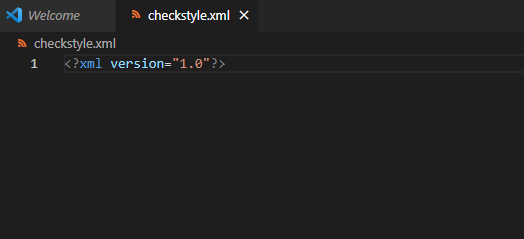The insertion is as follows for your convenience: "-//Puppy Crawl//DTD Check Configuration 1.2//EN" "http://www.puppycrawl.com/dtds/configuration_1_2.dtd"
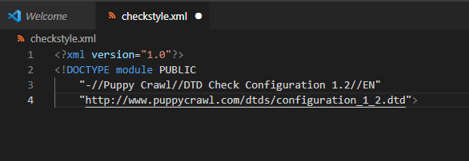This is so that the processor knows the file is a checkstyle file
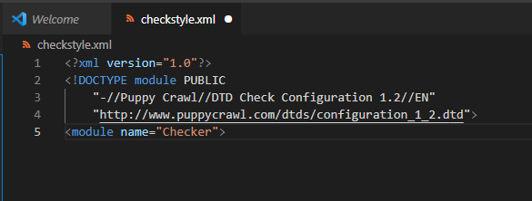"max" is the maximum number of chracters on a line
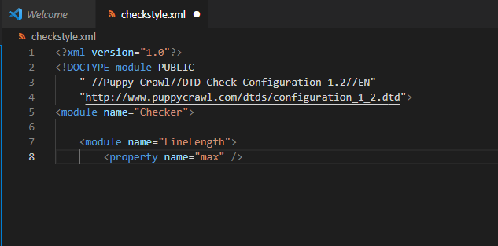In this example, 80 characters is the maximum
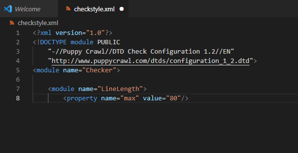This will close the checkstyle document
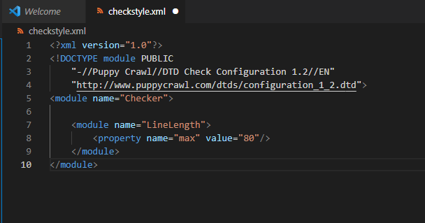https://checkstyle.sourceforge.io/checks.html
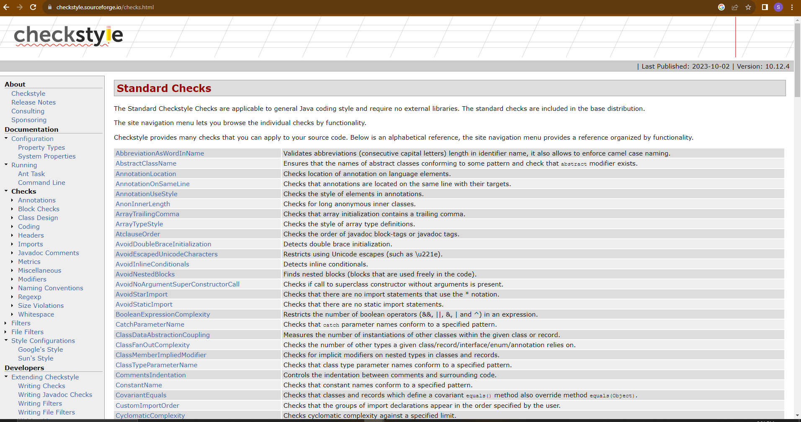You can also enter control shift p
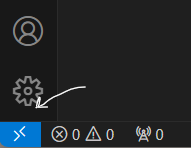“Remote-SSH: Add New SSH Host…”
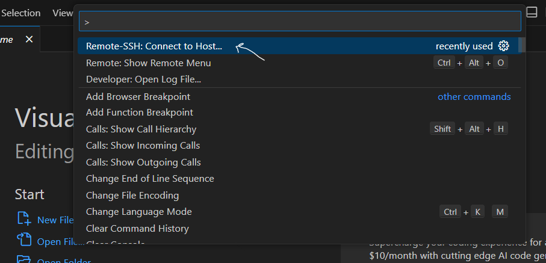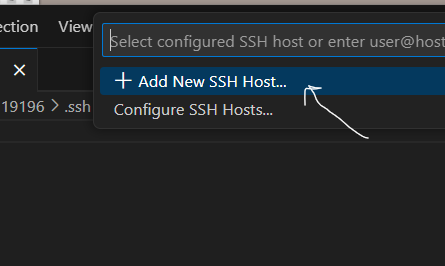
Replace USERNAME with your username.

Fun Fact: The student machine is Linux.
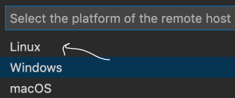The connect button is in the bottom right corner
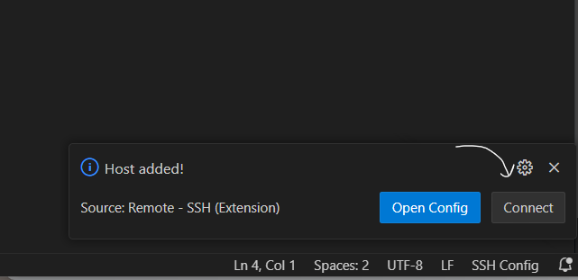Visit the FAQ page for common passwords if you don't know yours!